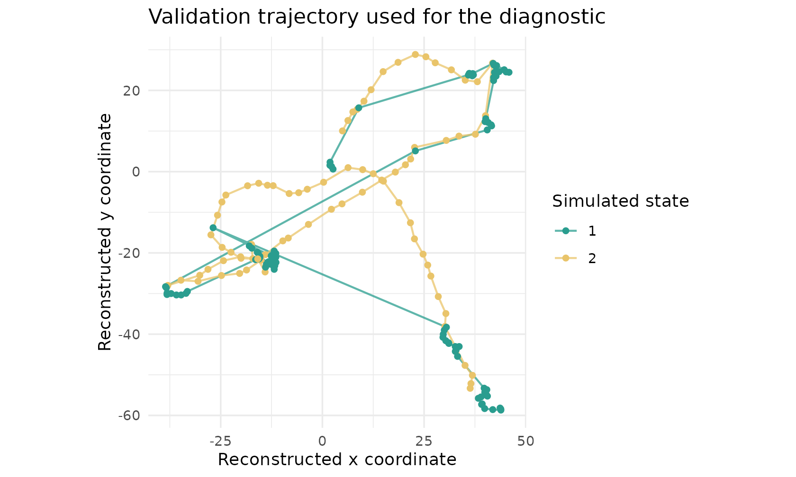
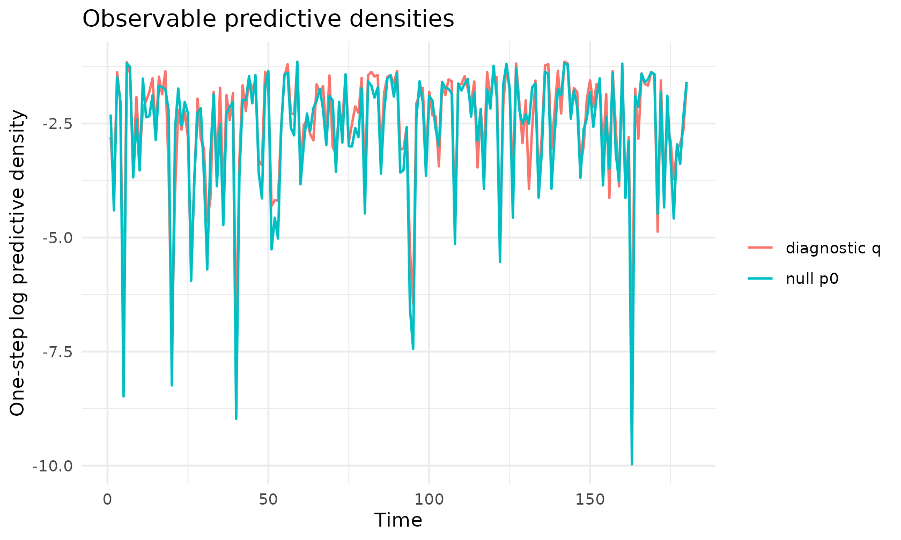
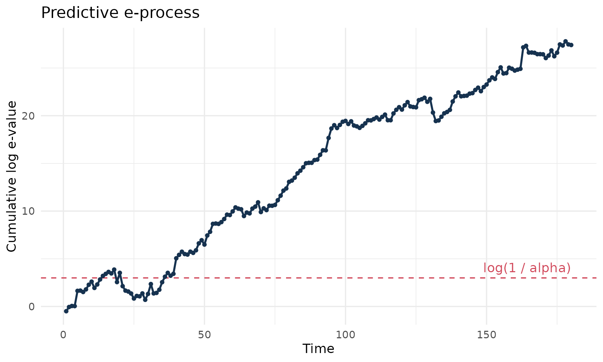
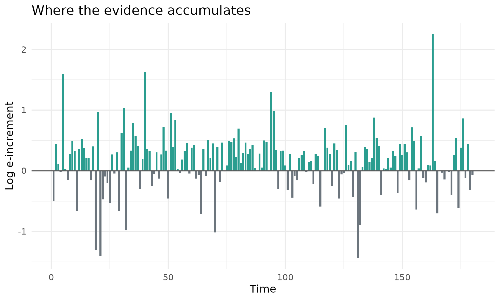

evalueHMM implements predictive e-diagnostics for hidden
Markov models (HMMs) of animal movement. The core idea is to compare,
sequentially, two observable predictive densities:
-
p0, the fitted null HMM used as the reference model; -
q, a diagnostic predictive alternative chosen before evaluating the validation observations.
At each time step, the diagnostic increment is
Positive increments mean that the diagnostic alternative predicted the next movement observation better than the null model. The cumulative sum is the log e-process. A large positive excursion is evidence against the fitted null generator.
A small validation experiment
The following example is deliberately small and fully reproducible. We define a two-state null HMM, then define a diagnostic alternative that has slightly larger step lengths and less diffuse turning angles. To make the visual signal easy to see, the validation trajectory is simulated from the diagnostic alternative. In an applied analysis, the validation data would be held-out data, not simulated from a known alternative.
set.seed(20260522)
null_parameters <- create_hmm_movement_parameters()
diagnostic_parameters <- perturb_hmm_movement_parameters(
parameters = null_parameters,
step_mean_multiplier = c(1.25, 1.10),
angle_sd_multiplier = c(0.75, 0.85)
)
validation_data <- simulate_hmm_movement(
n_times = 180,
parameters = diagnostic_parameters,
n_individuals = 1
)
head(validation_data)
#> individual_id time state step_length turning_angle
#> 1 1 1 1 2.6956489 0.2354130
#> 2 1 2 1 0.7475791 1.8615369
#> 3 1 3 1 0.4854436 0.4024511
#> 4 1 4 1 0.7664958 -0.9634319
#> 5 1 5 2 8.2853070 -0.3426069
#> 6 1 6 2 2.8845601 -0.1063887The simulated data contain step lengths, turning angles and the latent state used by the simulator. The latent state is shown below only because this is a simulation. It is not needed to compute the diagnostic.
make_track <- function(data) {
heading <- cumsum(data$turning_angle)
data$x <- cumsum(data$step_length * cos(heading))
data$y <- cumsum(data$step_length * sin(heading))
data$state <- factor(data$state)
data
}
track_data <- make_track(validation_data)
ggplot(track_data, aes(x = x, y = y, colour = state)) +
geom_path(linewidth = 0.6, alpha = 0.75) +
geom_point(size = 1.4) +
coord_equal() +
scale_colour_manual(values = c("#2A9D8F", "#E9C46A", "#264653")) +
labs(
x = "Reconstructed x coordinate",
y = "Reconstructed y coordinate",
colour = "Simulated state",
title = "Validation trajectory used for the diagnostic"
) +
theme_minimal()
Predictive log-densities
The diagnostic only needs the observable predictive log-density under the null model and under the diagnostic alternative.
log_p0 <- hmm_movement_predictive_log_density(
data = validation_data,
parameters = null_parameters
)
log_q <- hmm_movement_predictive_log_density(
data = validation_data,
parameters = diagnostic_parameters
)
density_comparison <- data.frame(
time = validation_data$time,
log_p0 = log_p0,
log_q = log_q,
log_e_increment = log_q - log_p0
)
head(density_comparison)
#> time log_p0 log_q log_e_increment
#> 1 1 -2.301788 -2.797178 -0.49539038
#> 2 2 -4.403405 -3.963557 0.43984857
#> 3 3 -1.484205 -1.375789 0.10841598
#> 4 4 -2.017042 -2.030164 -0.01312196
#> 5 5 -8.483668 -6.884478 1.59918980
#> 6 6 -1.182814 -1.156276 0.02653819The next plot shows the one-step log predictive densities. The two curves need not be separated at every time step. The e-process accumulates small gains and losses sequentially.
density_long <- rbind(
data.frame(time = density_comparison$time, model = "null p0", value = log_p0),
data.frame(time = density_comparison$time, model = "diagnostic q", value = log_q)
)
ggplot(density_long, aes(x = time, y = value, colour = model)) +
geom_line(linewidth = 0.65) +
labs(
x = "Time",
y = "One-step log predictive density",
colour = NULL,
title = "Observable predictive densities"
) +
theme_minimal()
E-process construction
On the log scale, the e-process is a cumulative sum of the log-density ratios.
eprocess <- compute_eprocess(
log_p0 = log_p0,
log_p1 = log_q,
alpha = 0.05,
time = validation_data$time
)
diagnostic <- make_predictive_diagnostic(
diagnostic_name = "step_angle_alternative",
log_p0 = log_p0,
log_q = log_q,
time = validation_data$time
)
summarise_predictive_diagnostic(diagnostic)
#> diagnostic_name alpha threshold signal crossing_time max_log_e
#> 1 step_angle_alternative 0.05 2.995732 TRUE 14 27.79642
#> final_log_e mean_log_increment n_observations
#> 1 27.41153 0.1522863 180
ggplot(eprocess$path, aes(x = time, y = log_e_cumulative)) +
geom_hline(
yintercept = eprocess$threshold,
linetype = "dashed",
colour = "#D1495B"
) +
geom_line(colour = "#16324F", linewidth = 0.8) +
geom_point(size = 1.1, colour = "#16324F") +
annotate(
"text",
x = max(eprocess$path$time),
y = eprocess$threshold,
label = "log(1 / alpha)",
hjust = 1,
vjust = -0.6,
colour = "#D1495B"
) +
labs(
x = "Time",
y = "Cumulative log e-value",
title = "Predictive e-process"
) +
theme_minimal()
The dashed line is log(1 / alpha). Crossing that line
gives evidence against the null HMM at level alpha in the
anytime-valid predictive sense used by the package.
Interpreting increments
The cumulative path is often easier to interpret together with the individual increments. Large positive bars are observations for which the diagnostic alternative predicted better than the null. Negative bars are observations for which the null predicted better.
ggplot(eprocess$path, aes(x = time, y = log_e_increment)) +
geom_col(aes(fill = log_e_increment > 0), width = 0.85, show.legend = FALSE) +
scale_fill_manual(values = c("#6C757D", "#2A9D8F")) +
geom_hline(yintercept = 0, colour = "grey35") +
labs(
x = "Time",
y = "Log e-increment",
title = "Where the evidence accumulates"
) +
theme_minimal()
In practice, this diagnostic should be read as model criticism. A signal does not identify a unique scientific mechanism by itself. It says that the null HMM is predictively outperformed by the chosen diagnostic alternative on the validation sequence.